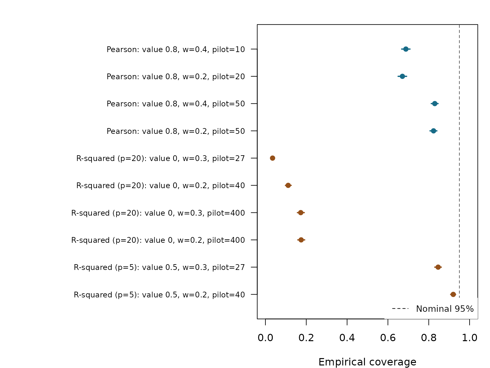
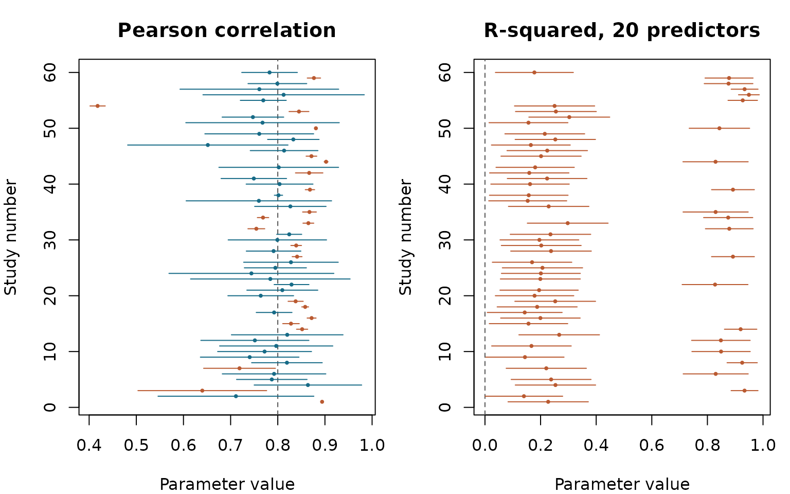
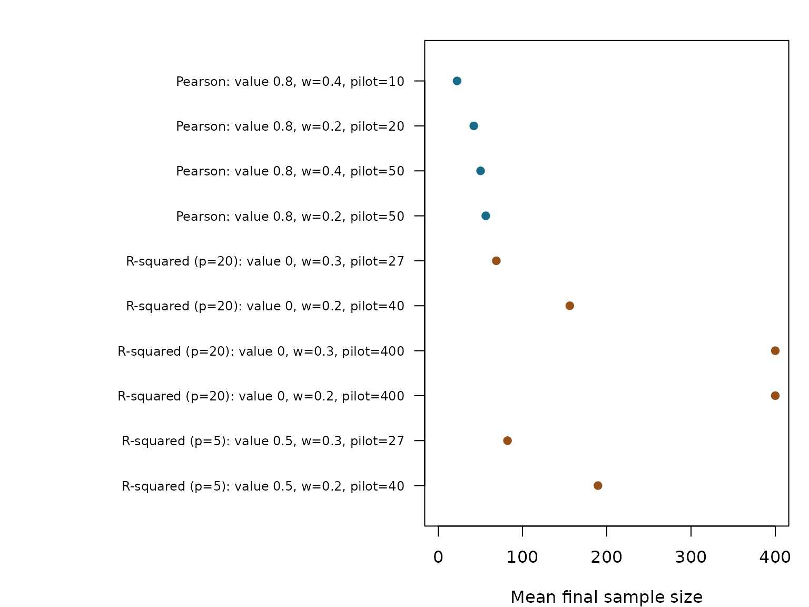

Coverage and Sample Size in Difficult Designs
Source:vignettes/coverage-and-design.Rmd
coverage-and-design.RmdWhat Does a Satisfied Rule Mean?
The AIPE stopping rules ensure that the reported confidence interval is no wider than the requested target. Coverage relies on asymptotic approximations under the relevant regularity conditions: at the sample size where a particular study stops, the probability that the interval contains the population value can be much smaller. A narrow interval can miss its target very consistently.
This vignette follows two difficult settings identified in a package quality review: a strong Pearson correlation and a multiple correlation with many predictors. All simulated results come from completed studies, rather than expected sample size formulas. The separate null-boundary calculation below uses the exact fixed sample distribution. No simulation is run while this vignette is built.
Where These Intervals Come From
The Pearson procedure uses the stopping rule and interval in Kelley,
Darku, and Chattopadhyay (2019), Equations 10 and 11, with the moment
variance estimator in Equation 70. The multiple R-squared procedure uses
the Wald interval in Equation 59, based on the normal approximation of
Olkin and Finn (1995), and the stopping rule corresponding to Equation
63. The help page ?seq_aipe_R2 explains the correction to
the printed stopping formula used to reproduce the published tables.
These are specific stress tests. The article’s multiple R-squared tables use 2, 5, and 10 predictors, positive population values, and widths of 0.05 and 0.10. Twenty predictors at a population value of zero extend beyond those conditions. A Pearson width of 0.4 also permits a very small pilot. Performance in these settings should be distinguished from performance in the published simulation designs.
Design and Reproducibility
Each condition has 2000 independent studies, a nominal confidence level of 95%, and multivariate normal observations. The Pearson population correlation is 0.8. For multiple R-squared, predictors are independent standard normal variables and the response has variance one, with equal predictor coefficients and independent normal error. The population R-squared is either 0 or 0.5.
A study begins at the pilot size returned by the matching package function. It checks the exported stopping rule after each additional observation, stopping the first time that rule is met. The largest allowed sample is 5,000. The table reports any studies that reached that limit without stopping. The larger pilots and narrower widths are comparisons to evaluate, not general prescriptions for adequate coverage.
knitr::kable(results[, c("id", "procedure", "truth", "p", "width",
"m_0", "pilot")],
col.names = c("ID", "Procedure", "Population value", "Predictors",
"Target width", "Minimum pilot", "Actual pilot"),
row.names = FALSE)| ID | Procedure | Population value | Predictors | Target width | Minimum pilot | Actual pilot |
|---|---|---|---|---|---|---|
| 1 | Pearson | 0.8 | 1 | 0.4 | 4 | 10 |
| 2 | Pearson | 0.8 | 1 | 0.2 | 4 | 20 |
| 3 | Pearson | 0.8 | 1 | 0.4 | 50 | 50 |
| 4 | Pearson | 0.8 | 1 | 0.2 | 50 | 50 |
| 5 | Multiple R2 | 0.0 | 20 | 0.3 | 22 | 27 |
| 6 | Multiple R2 | 0.0 | 20 | 0.2 | 22 | 40 |
| 7 | Multiple R2 | 0.0 | 20 | 0.3 | 400 | 400 |
| 8 | Multiple R2 | 0.0 | 20 | 0.2 | 400 | 400 |
| 9 | Multiple R2 | 0.5 | 5 | 0.3 | 7 | 27 |
| 10 | Multiple R2 | 0.5 | 5 | 0.2 | 7 | 40 |
The generating script is data-raw/coverage_study.R in
the source repository. It saves every study’s sample size, estimate,
limits, coverage indicator, width, and stopping status, along with the
software version, seeds, and function fingerprints. The full data are
installed with the package:
names(study)
#> [1] "summary" "trials" "meta"
head(trials)
#> design_id replication n estimate lower upper width covered
#> 1 1 1 64 0.8939639 0.8932711 0.8946566 0.001385571 FALSE
#> 2 1 2 21 0.7112672 0.5460576 0.8764767 0.330419149 TRUE
#> 3 1 3 15 0.6399364 0.5034530 0.7764199 0.272966967 FALSE
#> 4 1 4 27 0.8639079 0.7499344 0.9778815 0.227947099 TRUE
#> 5 1 5 11 0.7873349 0.7126065 0.8620634 0.149456857 TRUE
#> 6 1 6 15 0.7921172 0.6823642 0.9018701 0.219505868 TRUE
#> stopped variance_unusable noted
#> 1 TRUE TRUE TRUE
#> 2 TRUE FALSE FALSE
#> 3 TRUE TRUE TRUE
#> 4 TRUE TRUE TRUE
#> 5 TRUE FALSE FALSE
#> 6 TRUE TRUE TRUE
study$meta[c("generated_on", "package_version", "R", "generator")]
#> $generated_on
#> [1] "2026-10-26"
#>
#> $package_version
#> [1] "1.0.0"
#>
#> $R
#> [1] "R version 4.6.1 (2026-06-24)"
#>
#> $generator
#> [1] "independent multivariate normal streams; one observation per stage"Actual Coverage and Its Monte Carlo Uncertainty
Coverage is the fraction of studies whose final interval includes the known population value. Its Monte Carlo standard error describes uncertainty from the finite number of simulated studies. The plotted 95% intervals are exact binomial intervals for that simulation probability. They are not confidence intervals for the population correlation or R-squared in an individual study.
table <- results[, c("id", "coverage", "coverage_mcse", "coverage_lower",
"coverage_upper", "pct_width_within", "pct_capped")]
knitr::kable(table, digits = 4, row.names = FALSE,
col.names = c("ID", "Coverage", "MC SE", "MC lower", "MC upper",
"% within width", "% capped"))| ID | Coverage | MC SE | MC lower | MC upper | % within width | % capped |
|---|---|---|---|---|---|---|
| 1 | 0.6880 | 0.0104 | 0.6672 | 0.7083 | 100 | 0 |
| 2 | 0.6710 | 0.0105 | 0.6499 | 0.6916 | 100 | 0 |
| 3 | 0.8295 | 0.0084 | 0.8123 | 0.8457 | 100 | 0 |
| 4 | 0.8235 | 0.0085 | 0.8061 | 0.8400 | 100 | 0 |
| 5 | 0.0350 | 0.0041 | 0.0274 | 0.0440 | 100 | 0 |
| 6 | 0.1115 | 0.0070 | 0.0980 | 0.1261 | 100 | 0 |
| 7 | 0.1730 | 0.0085 | 0.1567 | 0.1903 | 100 | 0 |
| 8 | 0.1750 | 0.0085 | 0.1586 | 0.1924 | 100 | 0 |
| 9 | 0.8460 | 0.0081 | 0.8294 | 0.8616 | 100 | 0 |
| 10 | 0.9200 | 0.0061 | 0.9072 | 0.9315 | 100 | 0 |
labels <- sprintf("%s: value %g, w=%g, pilot=%d",
ifelse(results$procedure == "Pearson", "Pearson",
paste0("R-squared (p=", results$p, ")")),
results$truth, results$width, results$pilot)
position <- rev(seq_len(nrow(results)))
par(mar = c(4, 21, 2, 1))
color <- ifelse(results$procedure == "Pearson", "#176B87", "#955019")
plot(results$coverage, position, xlim = c(0, 1), ylim = c(0.5, nrow(results) + 0.5),
pch = 19, col = color, yaxt = "n", ylab = "",
xlab = "Empirical coverage")
axis(2, at = position, labels = labels, las = 1, cex.axis = 0.75)
segments(results$coverage_lower, position, results$coverage_upper, position,
col = color, lwd = 2)
abline(v = 0.95, lty = 2, col = "#555555")
legend("bottomright", "Nominal 95%", lty = 2, bg = "white",
box.col = "white", cex = 0.85)
The two conditions that reproduce the review’s concern are the first and fifth rows. In this new run the Pearson design covered in 68.8% of studies, and the 20-predictor null R-squared design covered in 3.5%. A separate earlier review with 1,000 studies found 67.4% and 2.9%, respectively. The seeds and random streams differ; both runs show coverage far below its nominal level.
What Happens in Individual Studies?
The next figure shows the first 60 independent studies in each baseline condition, in their original order. Blue intervals include the population value; orange intervals miss it. These are the intervals produced at the actual stopping points. The dashed line marks the population value.
par(mfrow = c(1, 2), mar = c(4, 4, 3, 1))
for (id in c(1L, 5L)) {
sample <- trials[trials$design_id == id & trials$replication <= 60L, ]
truth <- results$truth[results$id == id]
plot(range(c(sample$lower, sample$upper, truth)), c(1, 60), type = "n",
xlab = "Parameter value", ylab = "Study number",
main = if (id == 1L) "Pearson correlation" else "R-squared, 20 predictors")
abline(v = truth, lty = 2, col = "#555555")
colors <- ifelse(sample$covered, "#176B87", "#BA5A31")
segments(sample$lower, sample$replication, sample$upper, sample$replication,
col = colors)
points(sample$estimate, sample$replication, pch = 19, cex = 0.4, col = colors)
}
What Does a Larger Pilot Cost?
knitr::kable(results[, c("id", "mean_n", "se_mean_n", "median_n", "p90_n",
"mean_width", "pct_stop_at_pilot", "pct_variance_unusable")],
digits = 3, row.names = FALSE,
col.names = c("ID", "Mean n", "MC SE", "Median n", "90th percentile n",
"Mean width", "% stop at pilot", "% unusable variance"))| ID | Mean n | MC SE | Median n | 90th percentile n | Mean width | % stop at pilot | % unusable variance |
|---|---|---|---|---|---|---|---|
| 1 | 22.408 | 0.227 | 19.5 | 37 | 0.166 | 0.55 | 71.10 |
| 2 | 42.253 | 0.434 | 36.0 | 71 | 0.117 | 0.70 | 44.95 |
| 3 | 50.298 | 0.047 | 50.0 | 50 | 0.161 | 96.05 | 3.80 |
| 4 | 56.480 | 0.268 | 50.0 | 74 | 0.144 | 60.60 | 3.50 |
| 5 | 68.959 | 0.739 | 88.0 | 102 | 0.244 | 34.45 | 0.00 |
| 6 | 156.139 | 0.411 | 156.0 | 179 | 0.191 | 0.00 | 0.00 |
| 7 | 400.000 | 0.000 | 400.0 | 400 | 0.082 | 100.00 | 0.00 |
| 8 | 400.000 | 0.000 | 400.0 | 400 | 0.082 | 100.00 | 0.00 |
| 9 | 82.233 | 0.395 | 86.0 | 101 | 0.284 | 1.15 | 0.00 |
| 10 | 189.589 | 0.496 | 193.0 | 215 | 0.196 | 0.00 | 0.00 |
par(mar = c(4, 21, 2, 1))
position <- rev(seq_len(nrow(results)))
plot(results$mean_n, position, xlim = c(0, max(results$mean_n + 2 * results$se_mean_n)),
ylim = c(0.5, nrow(results) + 0.5), pch = 19, col = color,
yaxt = "n", ylab = "", xlab = "Mean final sample size")
axis(2, at = position, labels = labels, las = 1, cex.axis = 0.75)
segments(results$mean_n - 1.96 * results$se_mean_n, position,
results$mean_n + 1.96 * results$se_mean_n, position, col = color, lwd = 2)
For Pearson correlation, a larger pilot can reduce early stopping based on an unstable variance estimate. For multiple R-squared, increasing the pilot does not remove all difficulties: the estimate is biased upward, and the normal-theory Wald interval has particularly poor behavior at the boundary where the population R-squared is zero. These comparisons must be read as operating characteristics of the published procedures, not as a claim that any one pilot makes them reliable in general.
In the baseline null R-squared condition, 34.4% of studies stopped at the first check, with only 27 observations for twenty predictors. The resulting upward sample R-squared values explain the cluster of intervals far above zero in the individual-study figure.
Why the Null Boundary Needs a Different Interval
The null R-squared condition has a further problem: increasing the sample size does not make the usual Wald approximation correctly calibrated. With independent normal predictors and response, at a fixed sample size
The Wald interval includes the true value zero only when
n * R2 <= 4 * z^2 * (1 - R2)^2. The following coverage
probabilities use that exact distribution; they have no Monte Carlo
error.
n_fixed <- c(27, 69, 100, 400, 1000, 10000)
z <- stats::qnorm(0.975)
k <- 4 * z^2 / n_fixed
cutoff <- 2 * k / (1 + 2 * k + sqrt(1 + 4 * k))
knitr::kable(data.frame(n = n_fixed,
coverage = stats::pbeta(cutoff, 10, (n_fixed - 21) / 2)),
digits = 5, row.names = FALSE)| n | coverage |
|---|---|
| 27 | 0.00014 |
| 69 | 0.02710 |
| 100 | 0.05733 |
| 400 | 0.17513 |
| 1000 | 0.21466 |
| 10000 | 0.24172 |
As n grows, n * R2 approaches a chi squared distribution
with 20 degrees of freedom. Consequently, fixed sample Wald coverage
approaches Pr(chi_squared_20 <= 4 * z^2), or 24.49%.
This fixed sample limit is different from the coverage at a random
sequential stopping point. It demonstrates that the null boundary needs
a different interval construction; an ever larger minimum pilot cannot
establish the nominal 95% coverage of this Wald interval.
For this particular null design, one can also rule out 95% coverage
at every legal fixed sample size, rather than relying
only on the limit. Put c = 4 * z^2. The inclusion event
requires R2 <= c/n. The beta distribution has mean
p/(n-1) and variance
2*p*(n-p-1)/((n-1)^2*(n+1)). Since
p = 20 > c, a one sided variance inequality bounds
coverage by 40/(40+(20-c)^2), or 65.07%, for every
n > 21. This loose bound is already below 95%; the exact
probabilities in the table are much smaller. It is a conclusion about
fixed sampling with the current Wald interval, not a bound for arbitrary
sequential rules.
Sample Sizes With a Different Interval Construction
An adequate sample size depends on the interval and the criterion. The next comparison requires a full interval width no larger than the target for every possible observed estimate, together with at least 95% coverage under the normal model. It uses fixed sampling and intervals obtained by inverting the finite sample distribution, rather than the package’s Wald intervals. These are reference calculations, not new exported procedures or minimum pilot recommendations for the existing stopping rules.
For Pearson correlation, the sample correlation distribution is integrated under bivariate normality. For multiple R-squared with random normal predictors, the distribution is the negative binomial mixture of beta distributions in Oliveira and Ferreira (2022), Equation 2.3. Each central interval inverts the 0.025 and 0.975 cumulative probabilities, restricting multiple R-squared limits to [0, 1]. At the null boundary that construction has conservative 97.5% coverage. The width is maximized over observed estimates; the R-squared maximization is numerical, with an independent profile and bounds on the remaining tails.
tab <- reference$summary
tab$G <- format(tab$G, big.mark = ",", scientific = FALSE, trim = TRUE)
knitr::kable(tab[, c("parameter", "n", "target_width", "maximum_width", "G",
"coverage", "mc_lower", "mc_upper")],
digits = 5, row.names = FALSE,
col.names = c("Normal model", "Fixed n", "Target width",
"Maximum width", "Studies", "Coverage",
"MC lower", "MC upper"))| Normal model | Fixed n | Target width | Maximum width | Studies | Coverage | MC lower | MC upper |
|---|---|---|---|---|---|---|---|
| Pearson correlation = 0.8 | 96 | 0.4 | 0.39917 | 100,000 | 0.94958 | 0.94821 | 0.95093 |
| R-squared = 0, 20 predictors | 128 | 0.3 | 0.29870 | 20,000 | 0.97375 | 0.97144 | 0.97592 |
The Pearson maximum width is 0.40125 at n = 95 and 0.39917 at n = 96.
For multiple R-squared with 20 predictors, the numerical maximum is
0.30018 at n = 127 and 0.29870 at n = 128. Thus n = 96 and n = 128 meet
these width targets with the reference intervals. Independent normal
data confirm their coverage; the Monte Carlo uncertainty is shown in the
table. The script data-raw/normal_reference.R reproduces
these results, including the numerical distribution functions, controls,
seeds, and width profiles. The saved results are in
inst/extdata/normal_reference.rds.
These observations do not imply that the package’s Pearson interval is adequate at n = 96, or that its null R-squared Wald interval is repaired at n = 128. The interval construction matters. They also do not establish performance under other data distributions or at a sequential stopping point. A criterion allowing the width target to fail in some studies would give different sample size requirements.
Planning a Study
Check a design before collecting data. Start with the sensitivity function appropriate to the parameter, using plausible population values and assumptions. Compare wider and narrower targets and larger pilots, then inspect coverage, sample size, and the percentage of capped studies together. A simulation with normal data does not establish behavior for heavy tailed or discrete data.
seq_aipe_r_sensitivity(0.8, width = 0.4, m_0 = 50, G = 20, seed = 113)
#> term value
#> true_value 0.8
#> target_width 0.4
#> conf_level 0.95
#> replications 20
#> mean_n 50.45
#> median_n 50
#> sd_n 2.012461
#> mean_width 0.1706077
#> median_width 0.1773852
#> pct_width_within 100
#> coverage 0.95
#> pct_hit_max_n 0
#> pct_variance_unusable 5Twenty studies make a quick demonstration; use thousands for a decision about a design. Report the Monte Carlo error. If the planned procedure does not attain adequate coverage under plausible conditions, choose a different inferential design rather than interpreting its width target as a confidence guarantee.
References
Kelley, K., Darku, F. B., & Chattopadhyay, B. (2019). Sequential accuracy in parameter estimation for population correlation coefficients. Psychological Methods, 24(4), 492-515. https://doi.org/10.1037/met0000203
Oliveira, I. R. C., & Ferreira, D. F. (2022). Computing the noncentrality parameter to the distribution of the square of the sample multiple correlation coefficient. Chilean Journal of Statistics, 13(2), 187-199. https://www.soche.cl/chjs/volumes/13/ChJS-13-02-04.pdf